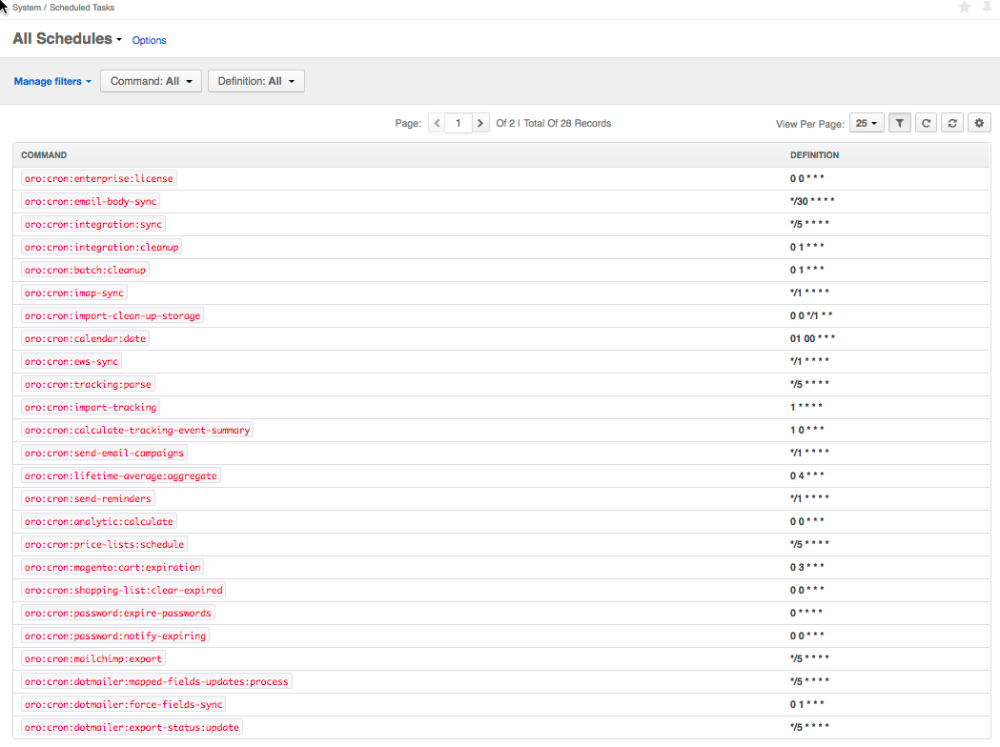

Some recurring tasks should be executed on schedule (for example, imap synchronization or sending email campaigns to customers). Usually, the operating system should be configured to execute a script to perform these tasks.
With OroPlatform, you can use the OroCronBundle which makes it easy to run Symfony Console commands through cronjobs (on UNIX-based operating systems) or through the Windows task scheduler.
You can view the scheduled tasks via the System > Configuration menu.
To regularly run a set of commands from your application,
configure your system to run the oro:cron command every minute.
On UNIX-based systems, you can simply set up a crontab entry for this:
*/1 * * * * /path/to/php /path/to/app/console oro:cron --env=prod > /dev/null
Note: Some OS flavors will require the user name (usually root) in the crontab entry, like this:
*/1 * * * * root /path/to/php /path/to/app/console oro:cron --env=prod > /dev/null
On Windows, use the Control Panel to configure the Task Scheduler to do the same.
Note
This entry in the crontab does not presuppose execution of cron commands
every minute. The oro:cron command only ensures that the actual
commands are added to the scheduler which makes sure that they are only
executed at the desired times (see How Does it Work
for the insight into the actual process).
Note
Please notice that oro:cron:definitions:load removes all previously loaded
commands from the db. So if there are other commands that add cron commands to
the db (such as oro:workflow:definition:load), they should be run after
oro:cron:definitions:load.
The oro:cron command will automatically execute all commands previously
loaded with the oro:cron:definitions:load command. It loads commands
that implement the CronCommandInterface if they are registered in the
oro:cron namespace. Implementing CronCommandInterface requires
implementation of two methods. First, it is
getDefaultDefinition().
It returns the crontab compatible description of when the command should
be executed. For example, if a command should be run every day five minutes
after midnight, the appropriate value is 5 0 * * *. Your command will
then look the following way:
isCronEnabled().
It checks some pre-conditions and returns true or false. If it returns false, the
command will not be added to the Message Queue. For example, for the integrations
sync command it can check that there are more than 0 active integrations.
1 2 3 4 5 6 7 8 9 10 11 12 13 14 15 16 17 18 19 20 21 22 23 24 25 26 27 28 29 30 31 32 33 | // src/Acme/DemoBundle/Command/DemoCommand.php
namespace Acme\DemoBundle\Command;
use Oro\Bundle\CronBundle\Command\CronCommandInterface;
use Symfony\Component\Console\Input\InputInterface;
use Symfony\Component\Console\Output\OutputInterface;
class DemoCommand implements CronCommandInterface
{
public function getDefaultDefinition()
{
return '5 0 * * *';
}
public function isCronEnabled()
{
// check some pre-conditions
return $condition ? true : false;
}
protected function configure()
{
$this->setName('oro:cron:demo');
// ...
}
protected function execute(InputInterface $input, OutputInterface $output)
{
// ...
}
}
|